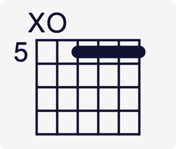
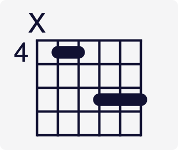
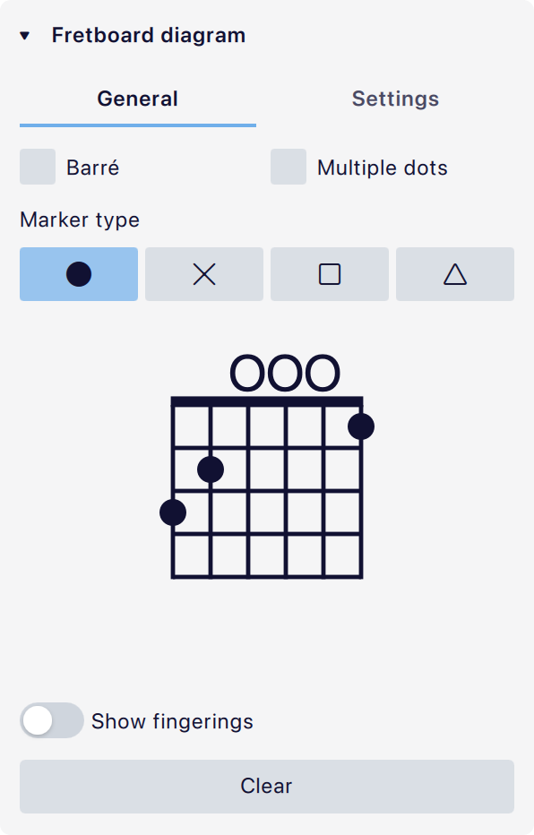
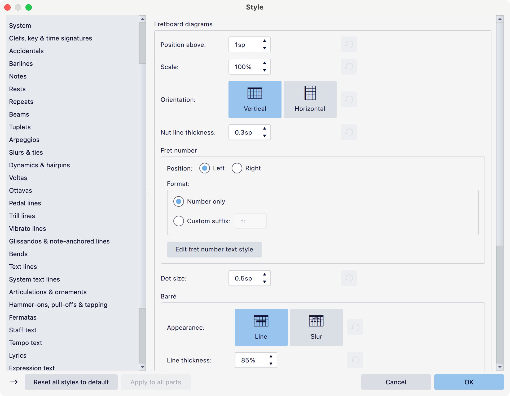
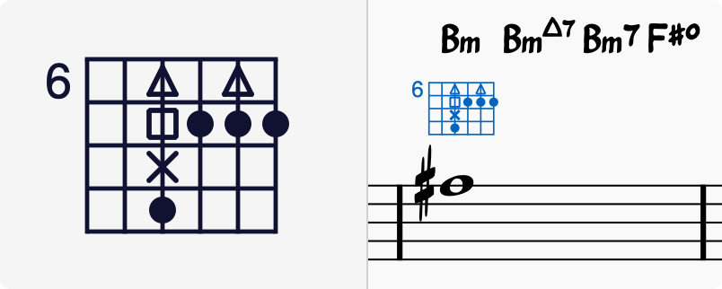

品位图
概述
品位图（或和弦）图表通常出现在主旋律谱和钢琴谱的谱表上方。

它们常用于吉他和弦，但 MuseScore Studio 允许你为任何弦乐器创建和自定义图表。
MuseScore Studio 附带一个常见品位图库，可以通过先创建和弦符号、再向其添加品位图来访问。
将品位图添加到你的乐谱
将品位图添加到乐谱最快的方法如下：
{% stepper %} {% step %} 按 Ctrl + K 在选中的音符或休止符处输入和弦符号（Mac：Cmd + K）。 {% endstep %}
{% step %} 输入任意和弦名称。 {% endstep %}
{% step %} 右键单击和弦符号，并选择 添加品位图。
与和弦符号对应的品位图会自动填充到乐谱中。 {% endstep %} {% endstepper %}
你也可以使用以下任何其他方法：
- 选中乐谱中的一个或多个和弦符号，然后：
- 在 属性 面板中，单击 和弦符号 部分中的 添加品位图 按钮。
- 在 偏好设置 -> 快捷键 中为 添加品位图 操作设置键盘快捷键并运行它。
- 选中一个或多个音符，然后单击 面板 -> 品位图 中的品位图。
- 将品位图从面板拖放到一个音符上。
要创建一个总结乐谱中每个和弦符号的品位图网格，见品位图图例。
和弦符号和品位图如何相互作用？
位于同一拍位置和谱表的品位图与和弦符号被视为关联的。
自动填充品位图
当你更改和弦符号中和弦的名称时，其关联的品位图会自动更新以匹配它。
一旦你自定义了某个图表，为防止其被覆盖，编辑其关联和弦符号时它不会自动更新。如果你永远不希望品位图在编辑和弦符号时发生变化，请前往 偏好设置 -> 音符输入 -> 品位图 并打开“更改和弦符号时绝不自动填充品位图”。
位置
你可以使用 格式 -> 样式… -> 和弦符号 -> 定位 中的“与品位图的最小间距”属性控制和弦符号与品位图之间的默认距离。你可以使用它们的外观属性进一步控制单个和弦符号和品位图的位置。
关联的和弦符号可以独立于其品位图删除，反之亦然。你还可以通过右键单击图表并选择 添加和弦符号，或使用 Ctrl + K 快捷键，向品位图添加新的关联和弦符号。
品位图面板
品位图 面板提供了一些基本的品位图作为入门（大调、小调和七和弦）。要查看关联的和弦名称，请将光标悬停在图表上。
当面板中的任何品位图被添加到乐谱时，其上方会自动放置一个和弦符号。
空白 图表元素让你可以添加一个空白图表，不过放到乐谱中后，你可以立即输入和弦符号来自动填充该图表。
你可以按住 Shift + Ctrl（Mac：Shift + Cmd）并将图表从乐谱拖到所需面板，从而将乐谱中的任何品位图保存到任意面板。
自定义品位图
要制作你自己的自定义品位图，或编辑已自动填充的品位图：
- 从 品位图 面板添加 空白图表（或选中乐谱中已有的图表）。
- 打开 属性 面板（切换 F8）。
- 在设置选项卡中按需编辑属性。
-
在常规选项卡中，使用交互式品位图编辑器按如下所述自定义图表： * 手指圆点（标记）
- 添加圆点：单击某个品位。圆点的形状由 标记类型 设置决定。如果勾选了 多个圆点，你可以在每根琴弦上添加多个圆点。
- 删除圆点：单击现有圆点/标记。
- 横按（Barrés）
- 添加横按：按住 Shift 并单击你想让横按开始的品位。或者，在勾选 横按 的情况下，直接单击该品位。


另见品位图属性（下文）。
品位图属性

当品位图被选中时，其属性可在属性面板中查看，如下所示：
常规（选项卡）
在 品位图 属性部分的底部是所选品位图的交互式编辑器。常规 选项卡包含使用交互式编辑器的工具，不过该编辑器在 设置 选项卡中也可用。
- 横按：勾选后，你可以一键在下方品位图编辑器上添加或删除手指横按。横按也可以通过按住 Shift 并单击来添加。
- 多个圆点：如果未勾选，每根琴弦只能添加一个手指圆点。如果勾选，每根琴弦可以添加多个圆点。
- 标记类型：当你单击品位图编辑器时，所添加圆点的形状由此属性决定。默认形状是圆形黑点，足以满足标准和弦（和音阶）图表的需要。还提供了十字、方形和三角形以支持其他记谱风格。
- 显示指法：打开后，你可以指定一个数字[^1]来表示每根琴弦应使用哪根手指按弦。
- 清除：清除所有内容，留下空白品位图。
设置（选项卡）
- 缩放：使品位图变大或变小。
- 琴弦：要显示的琴弦数量。
- 可见品位：指定显示的品位数量（这些从图表底部添加或移除；如果水平方向则从右侧添加或移除）
- 品位数字：指定图表的起始品位，显示在最上面的品位（或最左边的品位，如果水平方向）旁边
- 显示琴枕：可以关闭以隐藏图表顶部的加粗线。仅适用于第一把位[^2]图表。
- 方向：垂直方向从上到下绘制图表；水平方向从左到右绘制。
- 位置：将图表定位在谱表上方或下方。
- 排除垂直对齐：打开可将此品位图排除在同一个谱表上和弦符号与品位图的自动对齐之外。此复选框与关联到品位图的和弦符号属性中的同一复选框同步。
外观
通过单击 属性 面板中的 外观 编辑品位图的颜色、偏移量等。详见属性面板。
品位图样式
全局品位图属性可在 格式 -> 样式… -> 品位图 中设置：

替代记谱风格
一些编曲者和教育工作者扩展了品位图的基本形式，融入各种形状的手指圆点（见标记类型），并允许每根琴弦有多个圆点。爵士吉他手 Ted Greene 及其后继者是显著的例子。
多圆点记谱风格
使用这种方法，品位图上由圆形圆点表示的和弦先弹奏（见下图）。然后，在由和弦符号标记的后续节拍上，和弦指法会被修改以融入同一图表上的其他形状。通常的演奏顺序是：圆点 -> X -> 方形 -> 三角形（delta），但这可能会变化。

可选音符记谱风格
每根琴弦多个圆点的另一种用法是让其他符号显示可选音符，而不是延迟音符：

另见
[^1]: 1 = 食指
2 = 中指
3 = 无名指
4 = 小指
[^2]: 第一把位意味着 品位数字 设置为 1，即图表从第一品开始绘制。